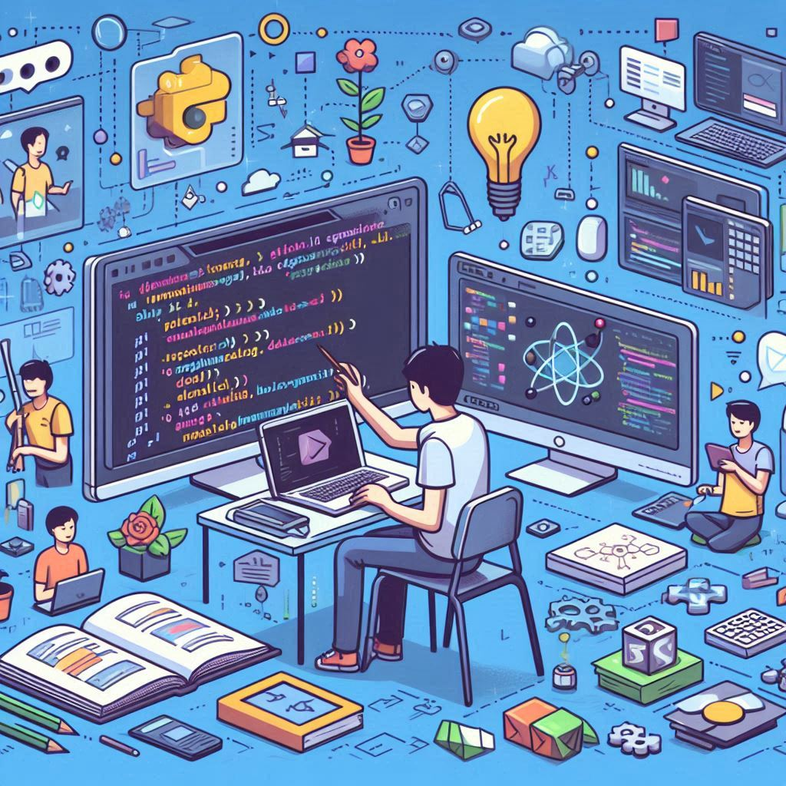

Un peu de cours
Puis est arrivée la seconde, un moment décisif où j'ai choisi l'option ISN. Ce fut une véritable
révélation. Pour la première fois, j'avais l'impression d'être exactement là où je devais être. J'y ai
découvert des langages comme le HTML, le CSS, et le Python, et, peu à peu, j'ai commencé à comprendre
leur fonctionnement. Le code, qui me semblait si complexe au départ, devenait plus accessible. Je
réalisais que je pouvais, moi aussi, créer des sites web, des jeux, des applications, et tant d'autres
choses.
Parallèlement, je me lançais doucement dans la 3D avec Blender, un processus naturel après avoir déjà
expérimenté Unity pour développer mes jeux. J'avais besoin d'assets pour enrichir mes créations, et
cette transition vers la 3D me permettait de repousser mes limites créatives.